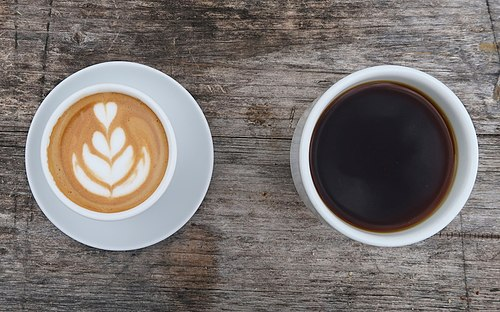

Kopi Arabika merupakan varietas kopi yang memiliki cita rasa khas dan aroma yang menggoda. Kopi ini berasal dari negara-negara di Timur Tengah, terutama Ethiopia, dan dikenal sebagai jenis kopi paling populer di dunia. Kopi Arabika memiliki karakteristik unik, seperti rasa yang lebih halus dan asam yang lebih tinggi dibandingkan dengan kopi Robusta.
Yaiya dong masa kopinya tiba-tiba muncul sendiri,untuk bahan membuat kopi sebagai berikut:
Selanjutnya, panaskan air bersih hingga mencapai suhu sekitar 93-96 derajat Celsius. Suhu air yang tepat akan membantu ekstraksi rasa kopi yang optimal.
Setelah alat seduh kopi siap, masukkan bubuk kopi Arabika ke dalamnya sesuai dengan takaran yang Anda inginkan. Gunakan perbandingan 1 sendok makan bubuk kopi untuk setiap 180 ml air.
Kemudian, tuangkan air panas secara perlahan ke dalam alat seduh kopi. Pastikan seluruh bubuk kopi terendam oleh air. Biarkan kopi mengalami proses perendaman selama beberapa menit sebelum melanjutkan proses penyeduhan.
Setelah bubuk kopi terendam oleh air, aduk kopi secara perlahan menggunakan sendok pengaduk. Aduk kopi selama beberapa kali untuk membantu pelepasan rasa dan aroma kopi yang lebih baik.